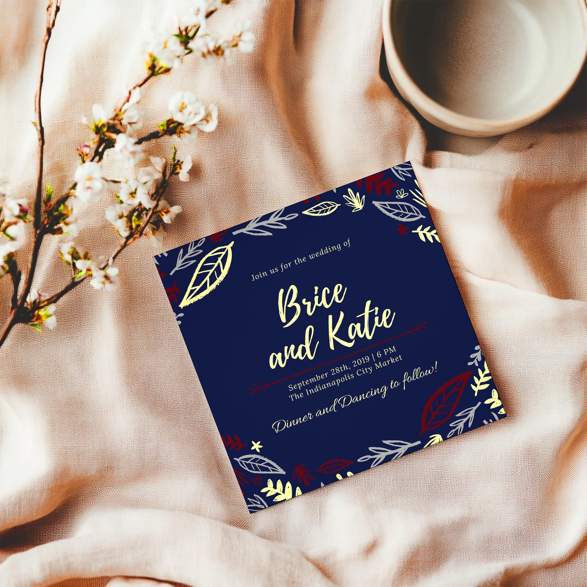
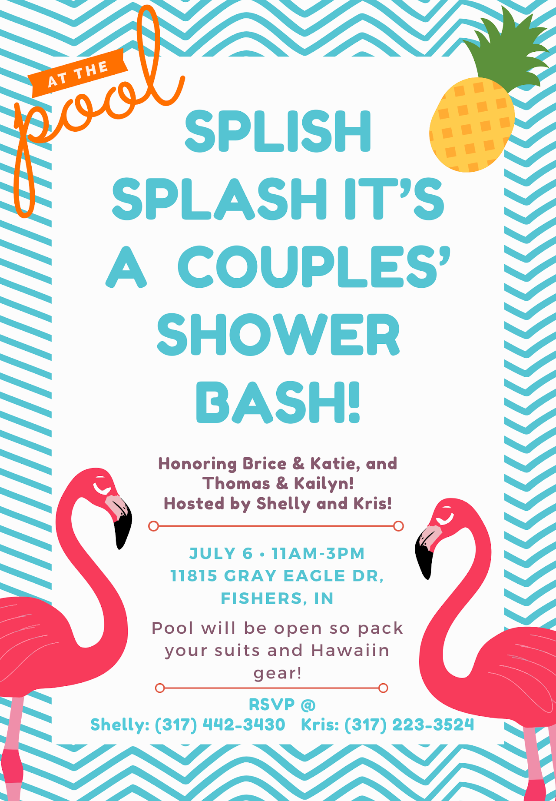

Wedding Print Media

Overview
I designed a collection of printed materials for a couple's shower, wedding, and receptions dinner. Each event had its own distinct theme and visual direction while maintaining a polished, cohesive approach across the complete collection.
The couples shower featured a playful summer pool theme with flamingos, the reception dinner incorporated a Mexican-inspired theme, and the wedding used an elegant fall color palette of navy blue and wine. In addition to the three invitations, I designed supporting wedding-day materials to help guest navigate and experience the event.
Role
I was responsible for the design and production of various print materials. The specific roles included:
The Challenge
The project required a collection of printed materials for three events celebrating the same couple, with each event having its own distinct theme and visual identity. Each event needed to feel unique and appropriate to its theme.
The wedding presented an additional challenge because the design needed to extend beyond the invitation into practical day-of materials. The seating chart, venue sign, and itinerary each had different informational purposes and size requirements, but still needed to feel like they belonged to the same wedding.
The Process and Tools
Couples Shower
The couples shower featured a fun, playful summer theme centered around flamingos and pool-inspired elements. I used the theme to create an invitation that immediately communicated the relaxed and festive atmosphere of the event.

Final Designs
The final project included five large-format advertisements prepared for print:
Each design incorporated the required branding, website information, and sport-specific imagery while being adapted to its individual format.


The Final Outcome
The completed project delivered five print-ready large-format advertisements tailored to different sports facilities and target audiences. The designs extended Advanced Bone and Joint and Orth Urgent Care's visual presence into local athletic environments while clearly communicating their services and brand information.
The project demonstrated my ability to work from detailed client specifications, adapt designs across large-format dimensions, and prepare professional artwork for physical production.